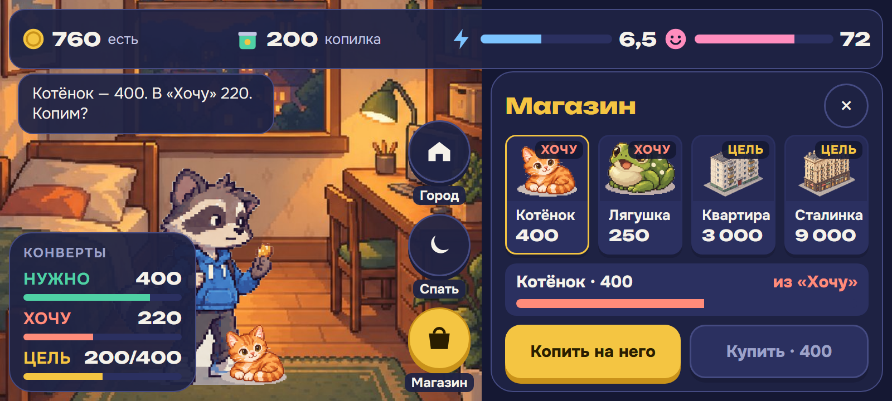
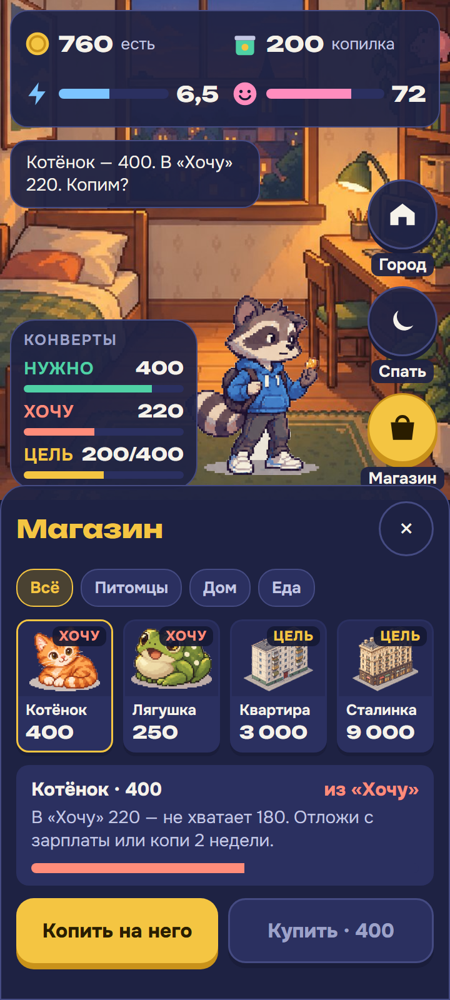
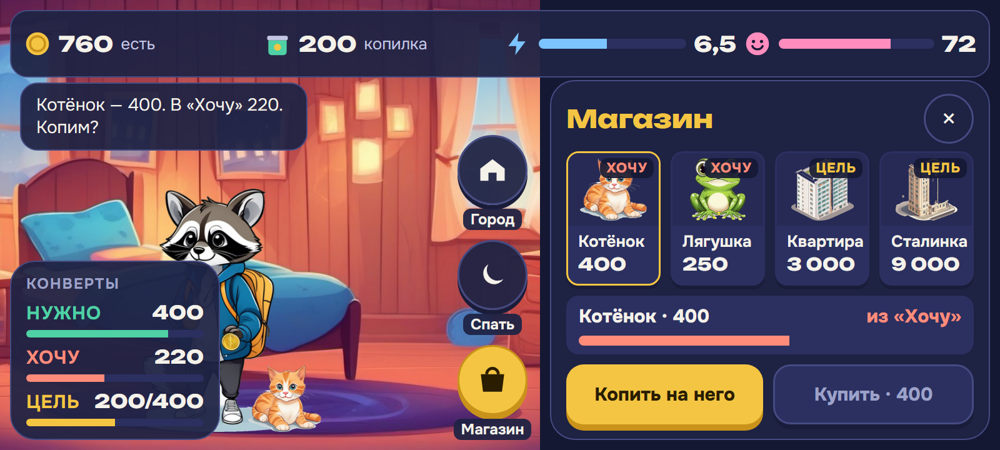
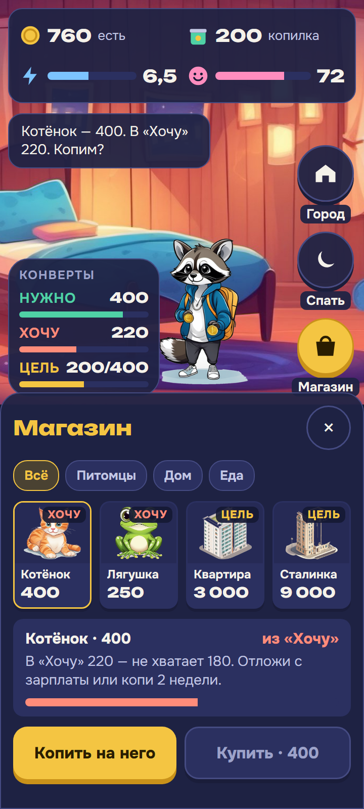
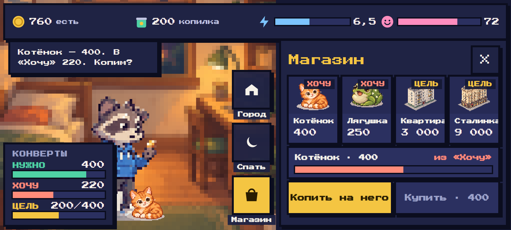
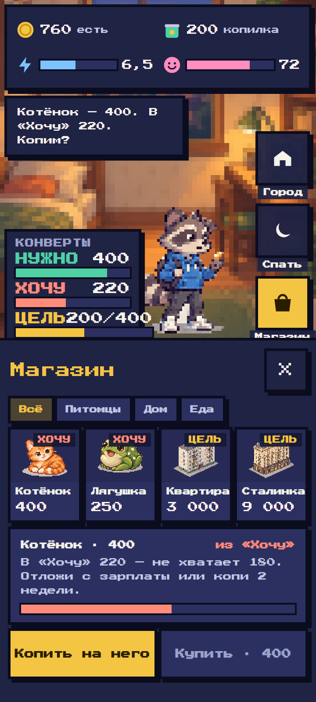

Финни — один экран в трёх видах
Комната, ресурсы, конверты и магазин — одни и те же данные, одна раскладка. Меняется только вид мира и интерфейса. Альбомная 800×360 — основная, портрет 360×800 обязан работать (ТЗ §3.1). Открыть живой экран: A · B · C (размер окна задаёт ориентацию).
A — пиксель мира высокого разрешения, гладкий интерфейс принят


- + Мир «как в современных инди-играх»: пиксель мелкий, глазам не тяжело
- + Текст и числа — гладкие Onest и Unbounded: читаются с первого взгляда, 66/66 русских букв и ₽
- + Тёмная панель отделяет интерфейс от пёстрой сцены — текст никогда не лежит на картинке
- − Два языка графики нужно держать в согласии: правила в
docs/design-system.md
B — всё гладкое


- + Самый «мультяшный» и мягкий, ближе к макету Алины с объёмным Финни
- − Похож на сотни мобильных игр — теряется характер
- − Каждый предмет и каждая стадия дома нужны в новой отрисовке: готового гладкого арта у команды нет
C — всё пиксельное


- + Цельный ретро-стиль, одна графика на всё
- − Крупный пиксель на телефоне утомляет глаза — то, от чего команда ушла 28.09
- − Пиксельный шрифт мелкий и широкий: фраза рвётся на строки, при ×1,3 не влезает. Первый проверенный шрифт (Pixelify Sans) путал «С» с «О» и «2» с «8» — в игре про деньги это недопустимо; здесь Press Start 2P
Арт: мир и питомцы — генерации команды (ChatGPT, 27.09); гладкие B — локальная SDXL base 1.0 без LoRA. Шрифты — Google Fonts (SIL OFL). Демо-экраны собраны HTML-макетом для сравнения; в приложении реализован вариант A.